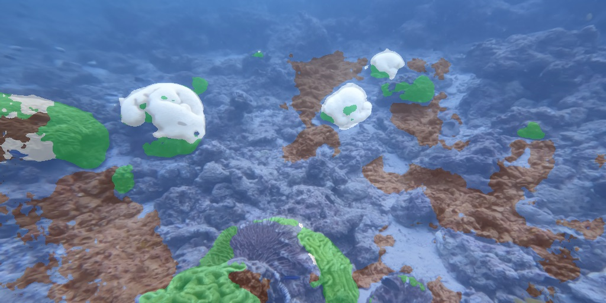
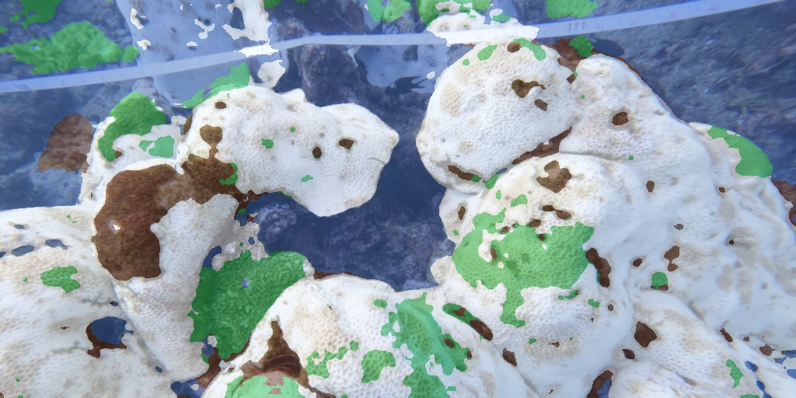
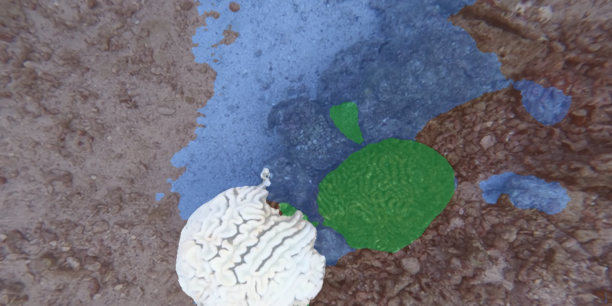

A coral-health segmentation model running on FPGA silicon, cheap enough in power to belong on an autonomous underwater vehicle. It labels every pixel of a reef frame as live, bleached, degraded or other, and returns a health map an AUV can navigate by.
As of 29 September 2026 the INT8 segmentation model is deployed and evaluated on real Kria KV260 hardware, executing on the DPU through the VART runtime over 200 reef frames.
Across 200 inferences the latency ranged from 76.86 ms to 77.43 ms — a spread of about half a millisecond, under 1% of the mean. That determinism is the thing a general-purpose processor struggles to give you: the accelerator is a fixed dataflow circuit, so there is no scheduler, no cache miss and no thermal governor to make one frame slower than the last. For a vehicle making navigation decisions from perception output, a predictable worst case is worth more than a faster average.
Coral reefs cover less than 1% of the ocean floor and support roughly a quarter of all marine species. They are also disappearing: between 2009 and 2018 the world lost about 14% of its coral cover, and during the fourth global bleaching event 84% of the world's reef area saw bleaching-level heat stress. Restoration works — coral fragments and larvae placed on damaged reef do survive — but the surveying and the placement both depend on human divers, which is exactly the part that cannot scale to the area involved.
An autonomous underwater vehicle could survey continuously, but it is constrained in every direction at once. Battery capacity sets mission length. A sealed pressure housing cannot be actively cooled, so every watt has to conduct out through the hull. And acoustic or tethered links are far too narrow to stream raw video to the surface. Whatever decides which patch of reef is damaged has to do it onboard, in real time, on a very small power budget.
Embedded GPUs like the Jetson Orin Nano sit in the 7–15 W range. The AMD Kria K26 module is specified at 7.5 W typical, and because this workload uses only a fraction of its logic and DSP resources, inference should land well below that. The architectural reason is that an FPGA accelerator has no von Neumann instruction-fetch overhead — the multiply-accumulate datapath is wired into the fabric and data flows through it, rather than each operation being fetched, decoded and dispatched. In DNN inference the dominant energy cost is data movement and control, not arithmetic, which is what makes a spatial architecture pay off here.
We don't have access to a coral reef, so verification runs against a photorealistic stand-in: a 3D Gaussian-splat reconstruction of a real survey plot in Tabuhan, Indonesia, rendered in Unreal Engine 5. Bleaching events are staged by recoloring individual coral colonies in the splat, which also gives us ground-truth masks for free. A simulated AUV flies a lawnmower survey at 1.2 m altitude and the rendered frames go to the physical KV260 over Ethernet — so the accelerator being tested is the real one, running the real bitstream.
My piece of this is the deployment pipeline: taking the trained segmentation model and carrying it through quantization, compilation and onto the KV260's DPU — while keeping accuracy loss inside budget and ensuring the graph runs entirely on the accelerator. That last constraint is the one that bites. If a single layer isn't supported by the DPU, the compiler partitions it out to the ARM cores, and the round trip through the CPU costs far more than the layer itself. A model that "works" with one CPU fallback layer can be several times slower than one that doesn't.
Going from FP32 to INT8 cuts the memory footprint roughly fourfold, which is what makes the model fit. The price is precision, and the interesting result is that the price is not the same for every architecture. In our earlier backbone comparison an EfficientNet-B0 backbone scored better than MobileNetV2 in full precision but broke under INT8 quantization — a model that is better on paper is not necessarily the model you can deploy. That finding is why the deployed network is an FPN over a ResNet backbone rather than the strongest full-precision candidate.
| Objective | Target | Status |
|---|---|---|
| Throughput on hardware | ≥ 10 FPS | 12.99 FPS measured on the KV260 |
| Runs on DPU | No CPU fallback layers | Executing on the DPU subgraph via VART |
| Segmentation accuracy | > 0.60 mIoU on 4 health classes | 0.606 / 0.615 IoU for quantized ResNet-18 / ResNet-34 on Coralscapes |
| Quantization loss | Within 3 points mIoU of full precision | In progress — full-precision baseline comparison underway |
| Power vs. embedded GPU | ≥ 1.5× lower energy per inference | Not yet measured on board |
Coral is one of the harder segmentation domains there is — the Coralscapes authors' best model reaches 57.8 mIoU on their 39-class benchmark. Against that, 0.60 on four consolidated health classes is a real target rather than a soft one.
Segmentation masks from the model, overlaid on frames from the digital twin. The four health classes are consolidated from the fine-grained Coralscapes labels into the categories a restoration decision actually turns on — you plant on degraded substrate, not on live coral.



Across the 200 frames evaluated on the board, the share of pixels assigned to each class came out as follows. Bleached coral is a small fraction of any reef scene, which is exactly the difficulty: it is the rarest class and the one that matters most.
| Class | Share of predicted pixels | |
|---|---|---|
| Other — water, sand, background | 71.5% | |
| Degraded — dead or algae-covered | 16.6% | |
| Live — healthy coral | 10.3% | |
| Bleached | 1.6% |
These are output distributions across the evaluated set, not accuracy figures — they describe what the model labelled, not how often it was right.
Segmentation needs detail and context at once: fine enough to trace the edge of a bleached patch, wide enough to know it is coral and not sand. A Feature Pyramid Network gets both by taking feature maps from several depths of the backbone, pulling them to a common width with 1×1 convolutions, and merging them top-down so that coarse semantic information flows back into the high-resolution levels.
Those lateral connections are the thing that complicates the hardware. A pure classifier can stream: it only ever needs a sliding window of recent rows, so a small line buffer suffices. An FPN has to hold several full feature maps on-chip simultaneously, because a later stage references an earlier stage's entire output. That is direct pressure on BRAM and it has to be budgeted for explicitly rather than discovered during synthesis.
The deployment path is proven end to end, which frees up the harder questions. Next on my side:
A model trained on real dive imagery has to recognise staged bleaching in a rendered scene, and a model validated in that scene has to transfer back to real reefs. Both directions of that reality gap have to be measured separately before the digital twin can be trusted as verification rather than as a demo.